Photos From Hubble

 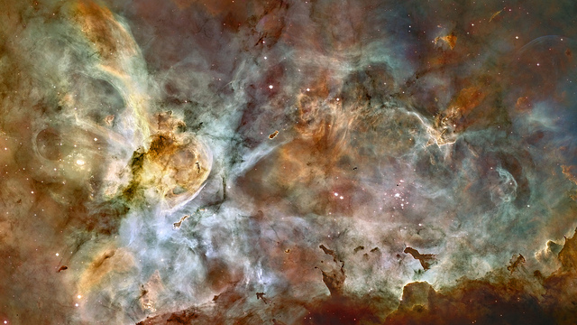
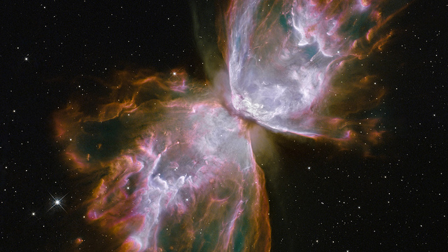
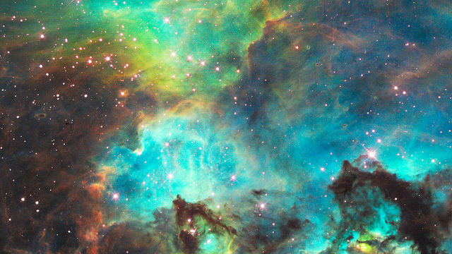
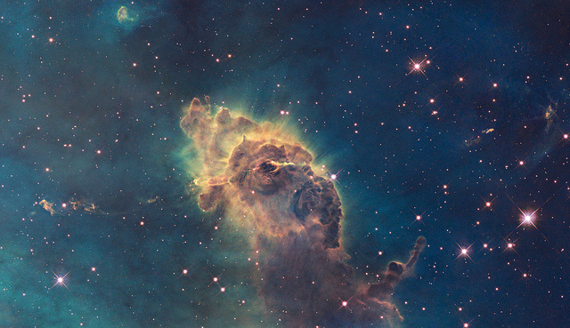
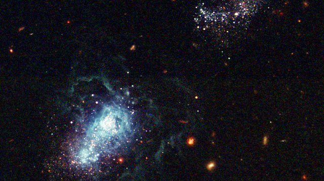
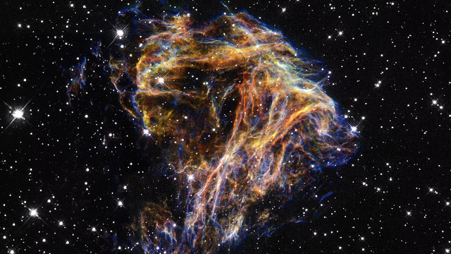
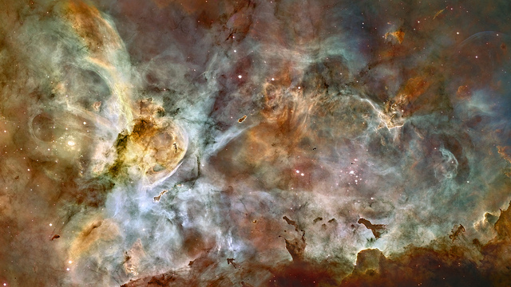
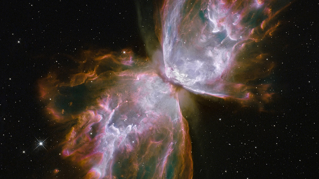
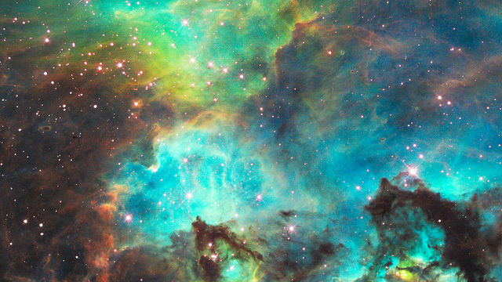
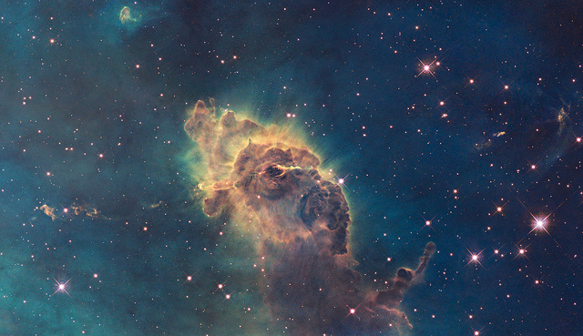
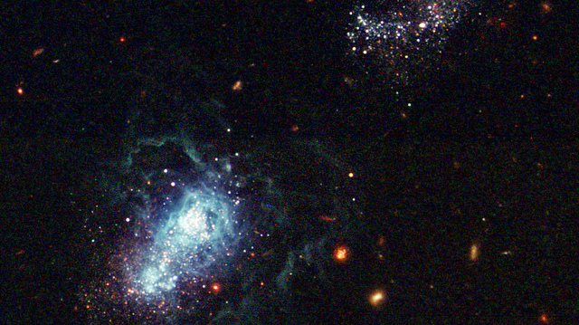
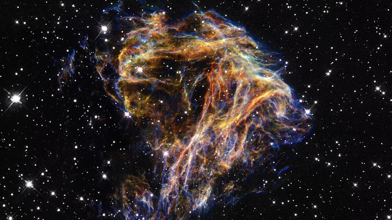
 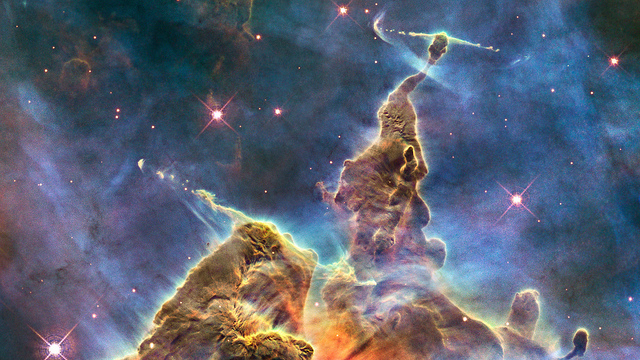
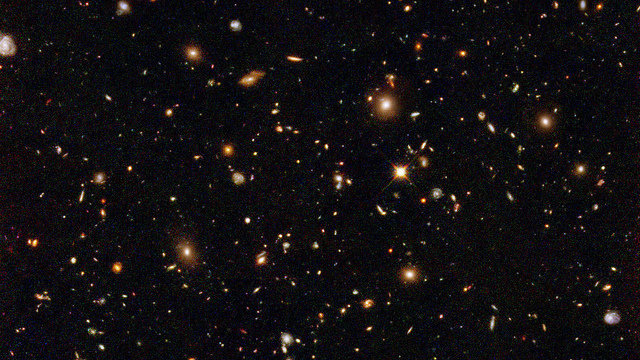
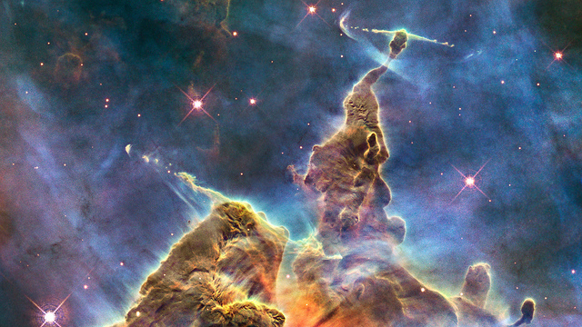
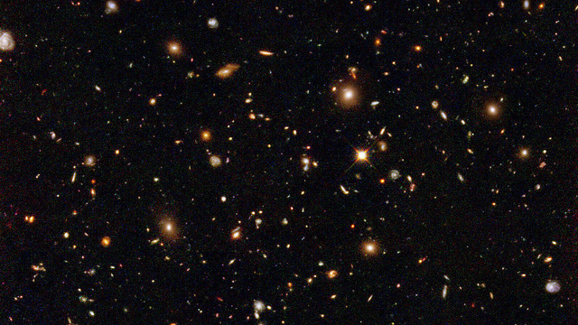

About the Gallery
The Hubble Space Telescope is one of the most vital research tools used by NASA and space agencies across the world. The HST was launched into low Earth
orbit in 1990, and is famous for its incredible high-resolution images, such as the Hubble Ultra Deep Field.
This photo gallery displays some of the incredible images
taken by the HST, the data from which over 9,000 papers have been published in peer-reviewed journals. The HST has set the groundwork for future projects including
the James Webb Space Telescope, and the Advanced Technology Large-Aperture Space Telescope.
Images in order from left-to-right, top-to-bottom:
- Whirlpool Galaxy & Companion (NGC 5194)
- Orion Nebula (NGC 1976)
- Carina Nebula (NGC 3372)
- Butterfly Nebula (NGC 6302)
- Star Cluster (NGC 2074)
- Carina Nebula Jet (NGC 3372)
- I Zwicky 18 (UGCA 166)
- DEM L 190 (N 49)
- Saturn's Rings
- Mystic Mountain (Carina Nebula)
- Hubble Ultra Deep Field
- Comet ISON (C/2012 S1)